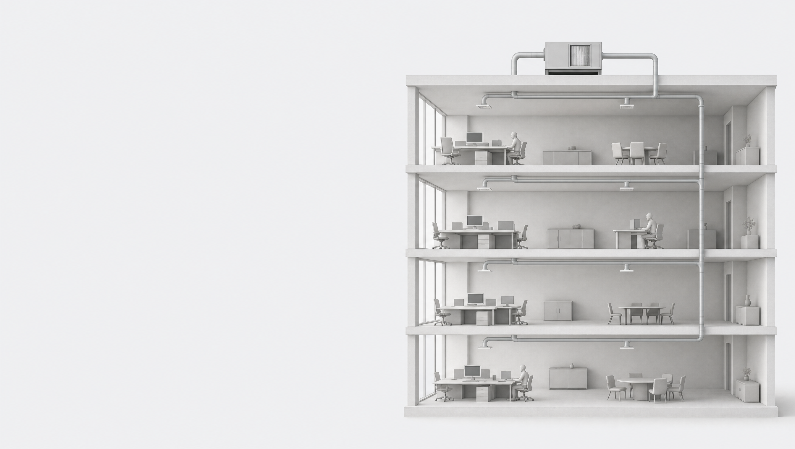

An air-handling unit does not clean each floor on its own — it mixes the air and sends it back out to every floor. A conventional filter traps dust, but the live virus rides straight through it, so the whole building shares one person's breath.